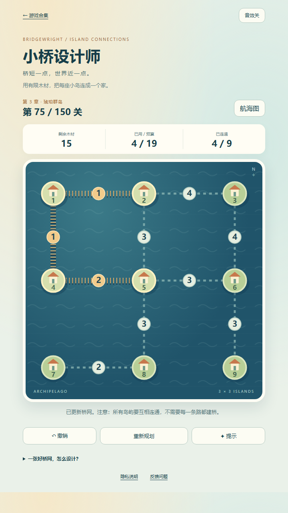
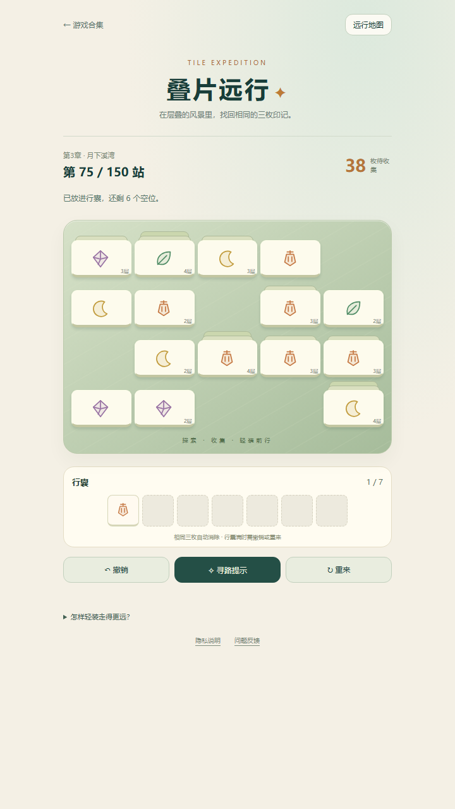
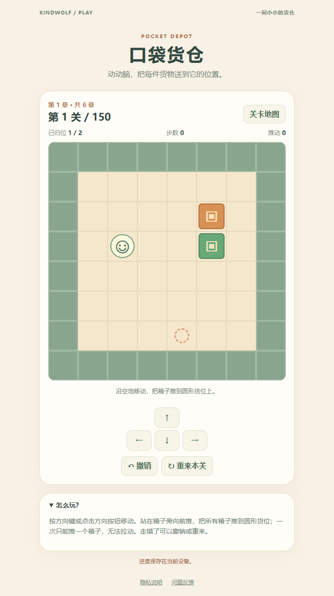
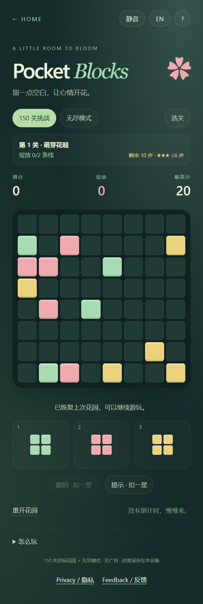
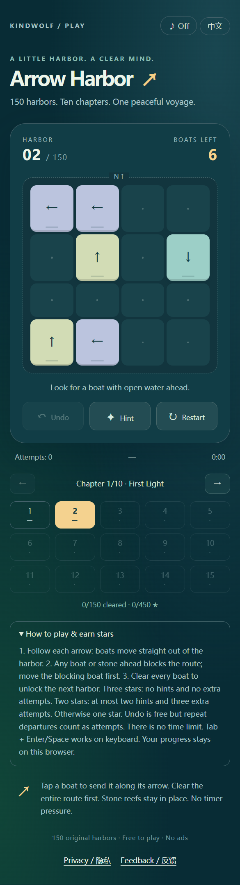
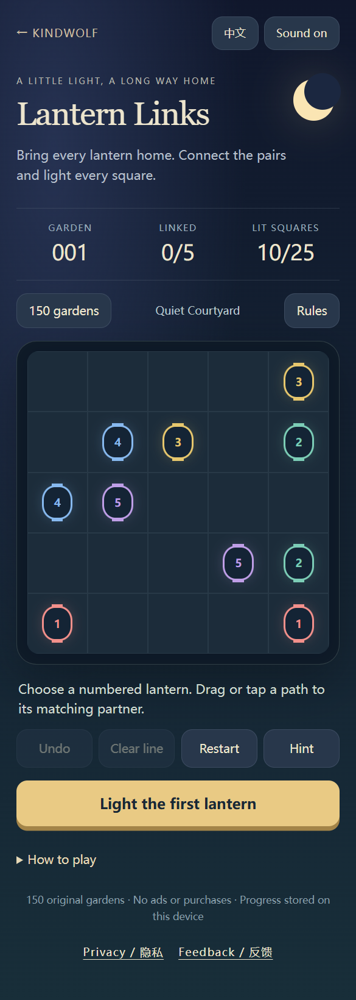

A LITTLE ROOM FOR PLAY
忙里偷闲，
再解一道。
十一个小世界，十一种动脑的乐趣。
挑一款喜欢的，打开就玩。从第一关开始，慢慢找到自己的解法。
每款150关免费 · 无广告 · 无内购无需注册 · 本机存档
选择你的下一局
11款游戏 / 真实玩法画面
150关 · 免费游玩桥梁 × 路线预算
小桥设计师
用有限的桥梁预算，连通群岛上的小镇。
开始游玩 ↗
150关 · 免费游玩层叠配对 × 托盘
叠片远行
观察遮挡，凑齐三个相同图案，收拾旅途中的小物。
开始游玩 ↗ 150关 · 免费游玩
150关 · 免费游玩磁极 × 目标规划
磁力工坊
安排磁力作用，让工件准确抵达目标。
开始游玩 ↗ 150关 · 免费游玩
150关 · 免费游玩传送带 × 顺序规划
包裹分拣站
把包裹按序送出。用有限的暂存位，理顺三条传送带。
开始游玩 ↗
150关 · 免费游玩推箱 × 空间解谜
口袋货仓
把每件货物送到目标位。一步步推开空间，卡住了随时撤销。
开始游玩 ↗ 150关 · 免费游玩
150关 · 免费游玩联动星环 × 逻辑
星轨共振
转动星环，让光点对准星标。注意相邻星环的联动。
开始游玩 ↗
150关 · 免费游玩拼块 × 行列消除
口袋方块
留一点空间，连起满行与满列。150关之外，还有无尽花园。
开始游玩 ↗
150关 · 免费游玩航道 × 出港顺序
箭头港湾
找准方向与顺序，带每一艘小船穿过礁石、驶离港湾。
开始游玩 ↗ 150关 · 免费游玩
150关 · 免费游玩拆解 × 托盘规划
铜色工坊
揭开层层零件，留意托盘容量，让工作台重新井然有序。
开始游玩 ↗
150关 · 免费游玩配对 × 全格覆盖
灯笼连线
牵起同色灯笼，让不交叉的光线覆盖整个夜空。
开始游玩 ↗ 150关 · 免费游玩
150关 · 免费游玩旋转管道 × 浇灌
花园水路
转动一段段水管，让清泉流到每一处花园。
开始游玩 ↗